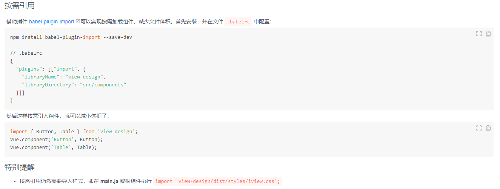

Vue实战开发-生态篇
目录
Vuex实战
疑问：扩展购物车示例，提供单次添加1-N的数量到购物车功能
1 | import Vue from 'vue'; |
使用Vuex的步骤：
- 注册Vuex：Vue.use(Vuex);
- 创建Store实例：new Vuex.Store(options)
- 挂载$store：new Vue({store: storeInstance})
Vuex原理
Vuex课后疑问
- Vuex是通过什么方式提供响应式数据的？
答：利用Vue的data特性实现
- $store是如何挂载到实例this上的？
答：在beforeCreate钩子函数中调用vuexInit
- 扩展min-vuex，实现getters，并实现vuex的方式注入$store
答：利用Vue的compute特性 + 拦截实现
暂且先记住这些疑问，我们先了解一下vuex。
Vuex提供的属性和方法
- 属性：state，getters
- 方法：commit，dispatch，replaceState，registerModule，unregisterModule，watch，subscribe，subscribeAction，hotUpdate
- 辅助函数：mapState，mapGetters，mapMutations，mapActions，createNamespaceHelpers
Vuex思维导图

总结
- 注册Vuex
1
2
3
4
5
6
7
8
9
10
11
12
13
14
15
// Vue.use会调用执行Vuex对外暴露的install方法
Vue.use(Vuex);
// Vuex-install方法
let Vue;
function install (_Vue) {
if (_Vue && Vue === _Vue) {
// 说明已经注册过，提示只能注册一次
} else {
Vue = _Vue;
// 全局混入beforeCreate钩子函数，执行VuexInit方法
Vue.mixin({
beforeCreate: VuexInit
})
}
}
创建Store实例
1
2
3
4
5
6
7
8// 创建Store实例
new Vuex.Store(options)
// Vuex.Store类
class Store () {
construct (options) {
// ... 初始化数据等等
}
}挂载$store
1
2
3
4
5
6
7
8
9
10
11
12// 每个组件执行到beforeCreate钩子函数时，会执行到注册Vuex时混入的全局beforeCreate中VuexInit函数
function VuexInit() {
let options = this.$options;
if (options.store) {
this.$store = Object.prototype.toString.call(options.store).includes('Function')
? options.store()
: options.store;
} else if (this.parent && this.parent.$store) {
// 保证每个组件中的$store指向的是同一个$store；以及可以直接在每个组件中使用this.$store
this.$store = this.parent.$store
}
}
vueRouter原理
VueRouter使用
1 | // 1. VueRouter注册 |
VueRouter解析
VueRouter注册
1
2
3
4
5
6
7
8
9
10
11
12
13
14
15
16
17
18
19
20
21
22
23
24
25
26
27
28
29
30
31
32
33
34
35
36
37
38
39// Vue.use会执行VueRouter的install方法
Vue.use(VueRouter);
// install方法
let _Vue;
function install (Vue) {
if (install.installed && _Vue === Vue) return;
install.installed = true;
_Vue = Vue;
// 混入beforeCreate,destroyed
Vue.mixin({
beforeCreate(){
if (isDef(this.$options.router)) {
this._routerRoot = this;
this._router = this.$options.router;
// VueRouter类中的init方法，会初始化一堆东西，同时执行transitionTo
this._router.init(this);
// 将整个对象变成响应式
Vue.util.defineReactive(this, '_route', this._router.history.current);
} else {
this._routerRoot = (this.$parent && this.$parent._routerRoot) || this;
}
},
destoryed() {}
});
// 挂载属性$ruoter和$route
Object.defineProperty(Vue.prototype, '$router', {
get () { return this._routerRoot._router; }
});
Object.defineProperty(Vue.prototype, '$route', {
get () { return this._routerRoot._route; }
});
// 注册全局组件
Vue.component('RouterView', View);
Vue.component('RouterLink', Link);
// 规定组件内路由导航的合并规则
const strats = Vue.config.optionMergeStrategies;
strats.beforeRouteEnter = strats.beforeRouteLeave = strats.beforeRouteUpdate = strats.created;
}创建VueRouter实例
1
2
3
4
5
6
7
8
9
10
11
12
13
14
15
16
17
18
19
20
21
22
23
24
25
26
27
28
29
30const router = new VueRouter({
mode: '',
routes: []
// ... 一堆配置项
});
// VueRouter类
class VueRouter{
// 构造函数
constructor (options) {
// 重要。创建一个包含addRoutes方法 + 映射表对象
// 映射表是一个包含里面含有pathList, pathMap, nameMap
this.matcher = createMatcher(options.routes || [], this);
// 初始化路由模式
let mode = options.mode || 'hash';
// supportsPushState是看当前环境是否支持html5的history模式
this.fallback = mode === 'history' && !supportsPushState && options.fallback !== false;
// 降级处理
if (this.fallback) {
mode = 'hash';
}
// 浏览器环境还是服务器环境
if (!inBrowser) {
mode = 'abstract';
}
this.mode = mode;
// 根据this.mode创建不同的路由模式对象
// history|hash|abstract模式对应HTML5History|HashHistory|AbstractHistory
}
}VueRouter注入组件
组件在创建执行到beforeCreate钩子函数时，会执行到VueRouter注入的beforeCreate钩子函数。进而，会执行里面的
this._router.init(this);1
2
3
4
5
6
7
8
9
10
11
12
13
14
15
16
17
18
19
20
21
22
23// 注入组件
new Vue({
router
});
// VueRouter实例的init方法，重点会执行transitionTo方法
function init () {
const history = this.history;
if (history instanceof HTML5History) {
history.transitionTo(history.getCurrentLocation());
} else if (history instanceof HashHistory) {
const setupHashListener = () => {
history.setupListeners();
}
history.transitionTo(
history.getCurrentLocation(),
setupHashListener,
setupHashListener
);
}
}
####VueRouter路由切换
核心方法就是confirmTransition，能够触发这个方法的是transitionTo方法，触发transitionTo方法的是：初始化，VueRoute实例router的push和replace方法。
1 | // transitionTo |
根据上面的代码可以得到【路由切换时，所有路由导航执行的顺序】：
vueRouter路由模式
- hash模式：格式如a/#/b
- history模式：格式如a/b，需要浏览器支持
- abstract模式：服务器端
hash和history主要区别就是对于路径处理
- push、replace对于路径处理不一致
- window监听的事件不一致
hash路由实现
1
2
3
4
5
6
7
8
9
10
11
12
13
14
15
16
17
18
19
20
21
22
23
24window.addEventListener(
supportsPushState ? 'popstate' : 'hashchange',
() => {
// 函数处理
}
);
function push(location, onComplete, onAbort) {
const { current: fromRoute } = this;
this.transitionTo(location, route => {
pushHash(route.fullPath);
}, onAbort);
}
// pushHash方法
function pushHash (path) {
if (supportsPushState) {
// 如果当前支持HTML5的history时
// 则就会执行和history模式一样的pushState方法
pushState(getUrl(path));
} else {
window.location.hash = path;
}
}history路由实现
1
2
3
4
5
6
7
8
9
10
11
window.addEventListener('popstate', e => {
// 函数处理
});
function push (location, onComplete, onAbort) {
const { current: fromRoute } = this;
this.transitionTo(location, route => {
pushState(cleanPath(this.base + route.fullPath));
}, onAbort);
}对于pushState方法，两个是一致的
1
2
3
4
5
6
7
8
9
10
11
12
13function pushState (url, replace) {
const history = window.history;
try {
if (replace) {
// 调用的是window.history.replaceState
} else {
// 调用的是window.history.pushState
}
} catch (e) {
// 调用window.location.replace或者是window.location.assign
window.location[replace ? 'replace' : 'assign'](url);
}
}
为什么history下刷新页面会404[如果后端不做配置]
答案：history模式形式为a/b/c会被服务器理解成在请求a路径下b路径下c资源，但是在服务器上根本没有这个资源就会出现404错误。因此如果要使用history时，需要后端进行配置。
单页面SPA & 解决方案Nuxt
单页面SPA缺点
不利于SEO【搜索引擎】
解决方案：服务端处理然后将html返回浏览器端，也就是服务端渲染同构SSR。同构SSR – 适合动态渲染，配置繁琐。
首屏渲染时间长
解决方案：预渲染Prerendering – Prerendering适合静态站点
解决方案Nuxt - 解决SEO问题
UI组件库
按需加载
1 | // 整个引用 |
只要是从element-ui引入东西，那么就会执行element-ui/src/index.js文件。而改文件中会将elemeent-ui组件库中所有的组件都import进来，那么就会将所有组件加载过来。只是import {Select} from 'element-ui'这种模式，减少了Vue全局组件的挂载而已，并不是严格意义上的 按需加载。
element-ui官网按需加载推荐
Ant Design of Vue官网按需加载推荐
iview官网按需加载推荐

单元测试- jset
常用方法
- describe 创建一个将几个相关测试组合在一起的模块
- test，别名it。运行测试
- expect 断言某个值
值对比
- toBe(value) 原始值或检查对象实例的引用一致性
- toEqual(value) 递归比较对象实例的所有属性